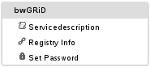

Granting access and issuing an user account for bwGRiD cluster in Esslingen, a registration at HE services website is required.

For bwGRiD Cluster login, only the secure shell SSH is allowed. Other protocols like telnet or rlogin are not allowed for security reasons.
A connection to bwGRiD cluster can be established with the command:
$ ssh <UserID>@grid01.hs-esslingen.de
To use a GUI-based application on the cluster through OpenSSH (which is usually
installed on Linux based systems), the ssh command must be used with -X option:
Start PuTTY, fill in at window PuTTY Configuration, under
category Session the following fields:
$ ssh -X <UserID>@grid01.hs-esslingen.de
Hints for using PuTTY (for Windows users)
Host Name (or IP address) : grid01.hs-esslingen.de
Port : 22
Connection Type : SSH
and click on Open, enter your password and accept adding host key.
Note: it is possible to save the configuration, given a certain name, and be loaded
later via that name.
Start WinSCP, fill in the following fields:
File Protocol : SFTP Host Name : grid01.hs-esslingen.de Port : 22 User name : <User ID>click Login and enter your password. Note: it is possible to save the configured session and load it later, via the given name.
<UserID> of the ssh command is a placeholder for the
username at your home organisation with a prefix as
followed:
The login node on the cluster is the node you are automatically redirected once you login, named grid01. It is the access point to the compute system and the user's working directories. The login node is shared with all the users of the cluster. Therefore, the activates on this node are limited to the set up of the batch jobs to run. The activities may also be:
Cluster provides an introduction and user manual that can be accessed from the login node through the following command:
$ man bw-gridThere user can find detailed information about work-spaces, queueing system, compute nodes, etc. Bellow a few basic steps will be described, to start working on the Esslinger bwGRiD cluster.
By default a user's $HOME directory size is limited to a quota of 100MB. Users can not exceed this disk space value and are required to create temporary workspaces for jobs which needs a larger amount of disk space. If for some reason, a project requires a larger amount of disk space in the $HOME directory, please contact your local grid admin on dgrid-support@hs-esslingen.de
Command:
$ ws_allocate <WORKSPACE_NAME> <PERIOD_OF_EXISTANCE_IN_DAYS>allocates a new workspace, where <WORKSPACE_NAME> is a name of user's workspace which does not start with "-", and can not contain any special characters or spaces. <PERIOD_OF_EXISTANCE_IN_DAYS> is the number of days a user want to have the workspace active. Maximum number of days that can be allocated is 60. Further, the user can extend the active period of a workspace 16 times, with the following command:
$ ws_extend <WORKSPACE_NAME>To list all your available workspaces and their expiration dates, use:
$ ws_listTo find allocated directory of a workspace:
$ ws_find <WORKSPACE_NAME>
In order to use different compilers, libraries or software packages on the cluster, users are required to set specific environment variables for each session, which tells the cluster which version or package the user intents to work with. This issue is handled with the help of Environment modules or short Modules. Through some predefined commands, cluster users can load, unload, list, read help files of the installed modules on the cluster.
This section will be updated, meanwhile you can visit bwHPC-C5 wiki modules compartment, which describes the environment modules usage on HPC clusters in general, and is fully supported on bwGRiD Esslingen as well.